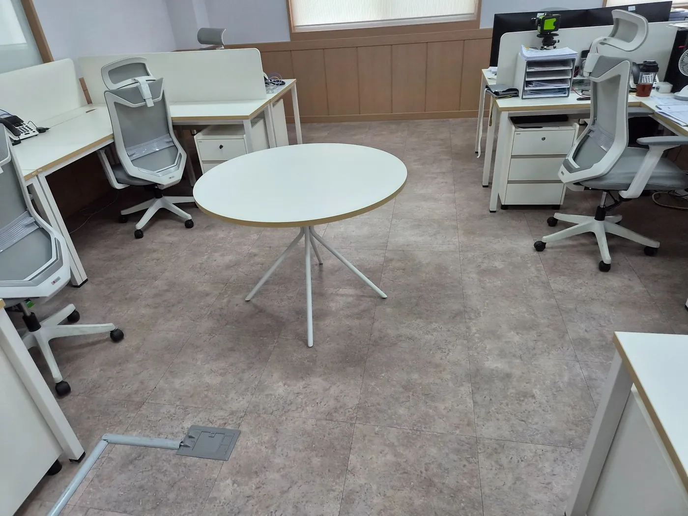
책상과 의자가 놓인 사무실은 의자 바퀴 주변과 책상 아래에 미세먼지와 작은 이물질이 반복적으로 쌓입니다. 통행이 잦은 동선은 먼지가 눌리면서 바닥 색이 탁하게 보이기 쉬워 구역을 나눠 꼼꼼하게 관리합니다. 작업 후에는 바닥 표면에 남는 먼지와 얼룩을 줄이고, 직원이 바로 업무를 이어갈 수 있도록 공간을 정리합니다.
사무실 바닥과 회의공간 정기관리
김해 안동공단 사무실 정기청소처럼 직원 출입이 많은 기업체는 하루만 지나도 바닥에 먼지와 신발 자국이 다시 생깁니다. 특히 회의실과 사무공간은 의자 다리, 책상 주변, 모서리 등 눈에 바로 띄지 않는 부분이 계속 누적되기 때문에 정해진 주기로 반복 관리하는 것이 중요합니다.
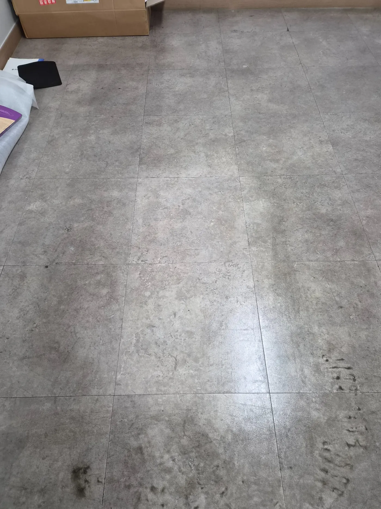
바닥 가까이에서 보면 이동 동선에 작은 검은 자국과 먼지, 눌린 오염이 확인됩니다. 이런 오염은 넓은 공간에서는 잘 보이지 않지만 조명 반사가 생기면 얼룩처럼 도드라집니다. 정기청소에서는 먼저 오염이 많은 구역을 확인하고 전체 바닥 청소 강도를 조절합니다.
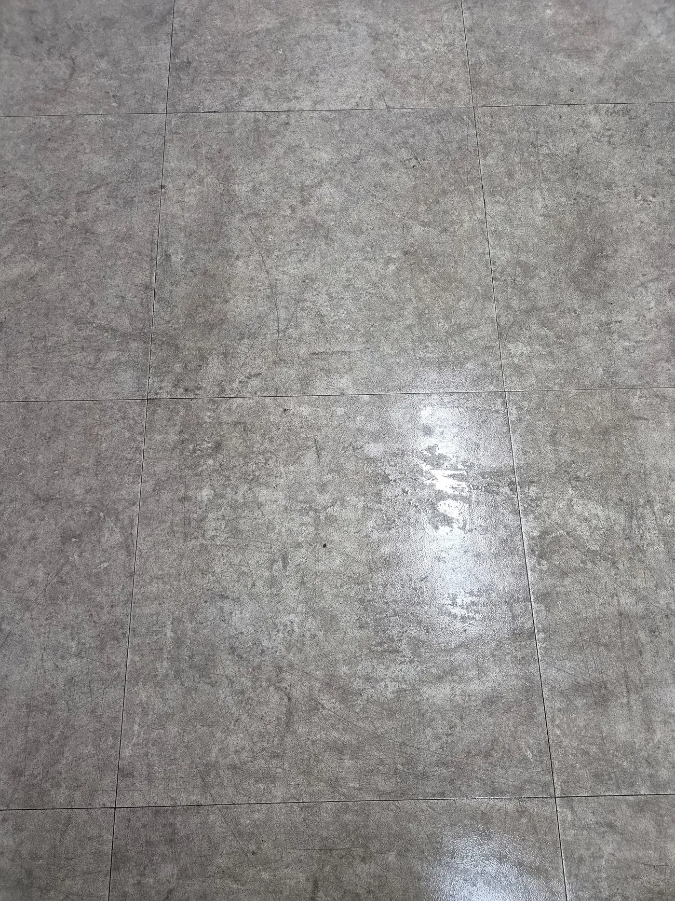
먼지와 이물질을 제거한 뒤 바닥 재질에 맞춰 표면을 정리하면 공간 전체가 훨씬 단정하게 보입니다. 한 부분만 과하게 닦기보다 전체 톤이 고르게 보이도록 관리하는 것이 중요합니다. 정기관리 현장에서는 매회 상태를 확인하면서 오염이 집중되는 구역을 추가로 관리합니다.
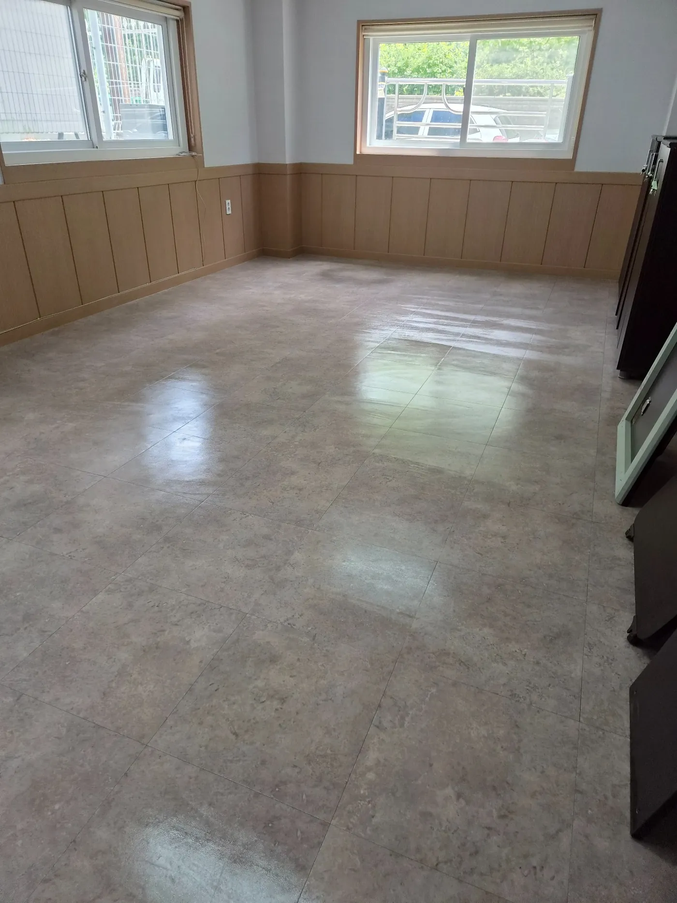
가구가 없는 공간은 바닥 상태가 그대로 드러나기 때문에 작은 먼지나 얼룩도 눈에 잘 보입니다. 벽면 가장자리와 걸레받이 주변은 중앙부보다 청소가 놓치기 쉬운 구역이라 별도로 확인합니다. 넓은 면을 정리한 뒤 가장자리까지 마무리하면 공간의 완성도가 높아집니다.
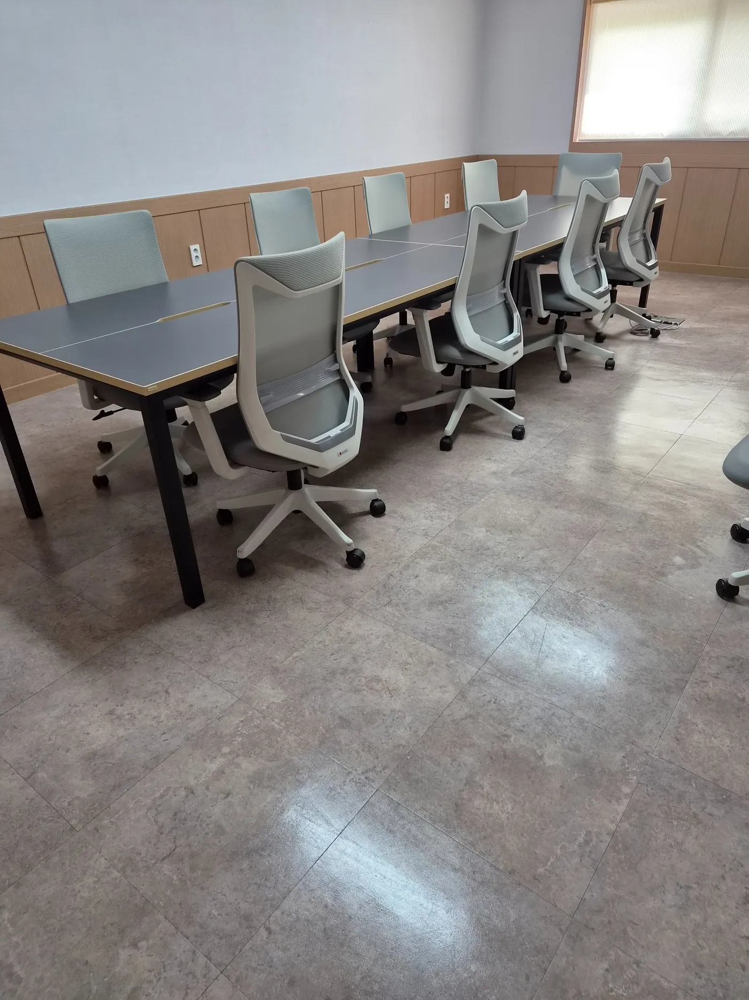
회의실은 사용 시간이 짧아 보여도 여러 사람이 반복해서 이용하면서 의자 주변에 먼지와 머리카락이 쉽게 모입니다. 테이블 아래와 벽 쪽은 시야에서 가려져 오염이 누적되기 쉬운 구간입니다. 정기청소 때는 가구 배치를 크게 흐트러뜨리지 않으면서 접근 가능한 범위를 세밀하게 정리합니다.
휴게실과 공용공간도 함께 관리
직원 휴게실과 식사공간은 사무실보다 음식물 부스러기와 물기, 신발 오염이 함께 발생하기 쉽습니다. 사용 빈도가 높은 공간일수록 바닥만 보는 것이 아니라 테이블 주변과 싱크대 인접 구간, 출입 동선을 함께 확인해야 합니다.
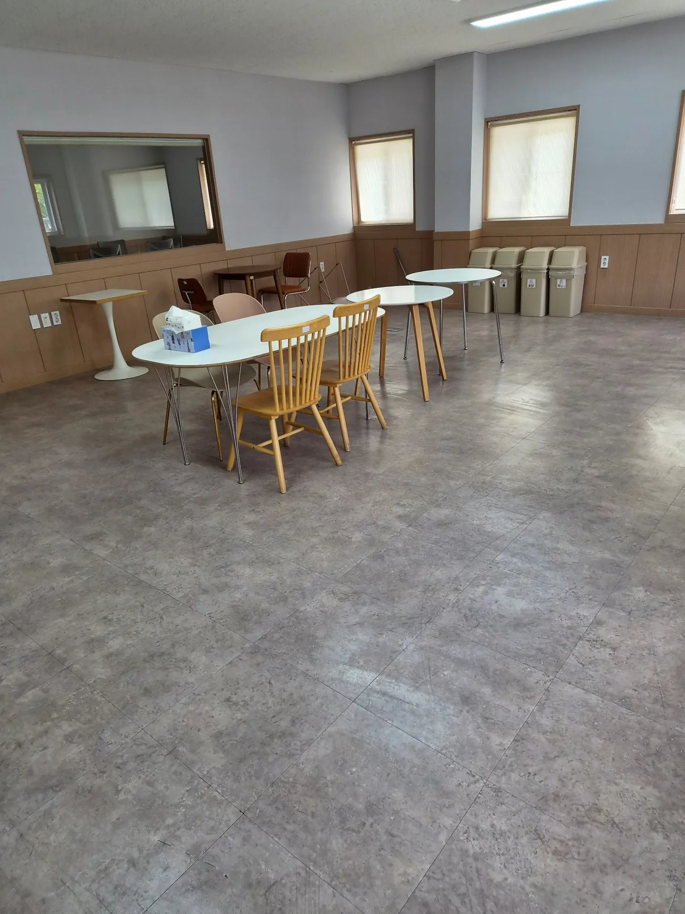
테이블과 의자가 많은 휴게실은 음식물 부스러기, 음료 자국, 먼지가 동시에 발생할 수 있습니다. 의자 아래와 테이블 다리 사이처럼 손이 잘 닿지 않는 곳을 먼저 확인한 뒤 전체 바닥을 정돈합니다. 직원들이 자주 사용하는 공간인 만큼 청소 후 끈적임이나 잔여물이 남지 않도록 마무리 상태를 점검합니다.
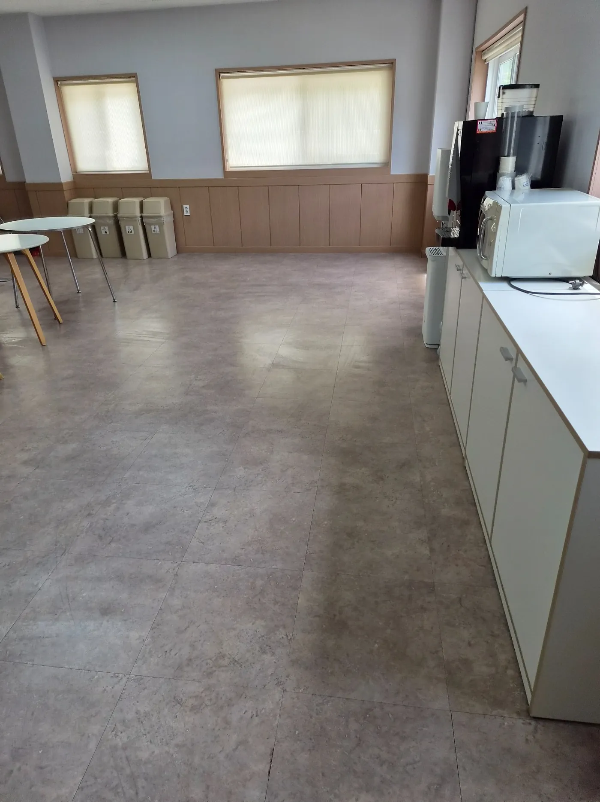
싱크대와 정수기, 수납장이 있는 공간은 물이 떨어지거나 작은 음식물 오염이 생기기 쉽습니다. 바닥과 가구 하단부 주변을 함께 보면서 먼지와 오염이 남지 않도록 정리합니다. 정기적으로 관리하면 한 번에 강한 세척을 해야 하는 상황을 줄이는 데 도움이 됩니다.
출입구·복도·계단 같은 공용부 관리
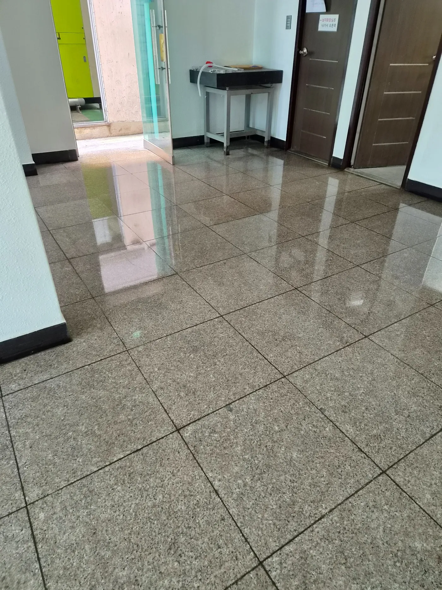
출입이 반복되는 복도는 외부 먼지와 신발 자국이 계속 유입됩니다. 밝은 조명 아래에서는 바닥 얼룩이 더 쉽게 드러나기 때문에 넓은 면을 균일하게 관리해야 합니다. 통행에 방해되지 않도록 작업 순서를 나누고, 끝부분과 문 앞까지 확인해 마무리합니다.
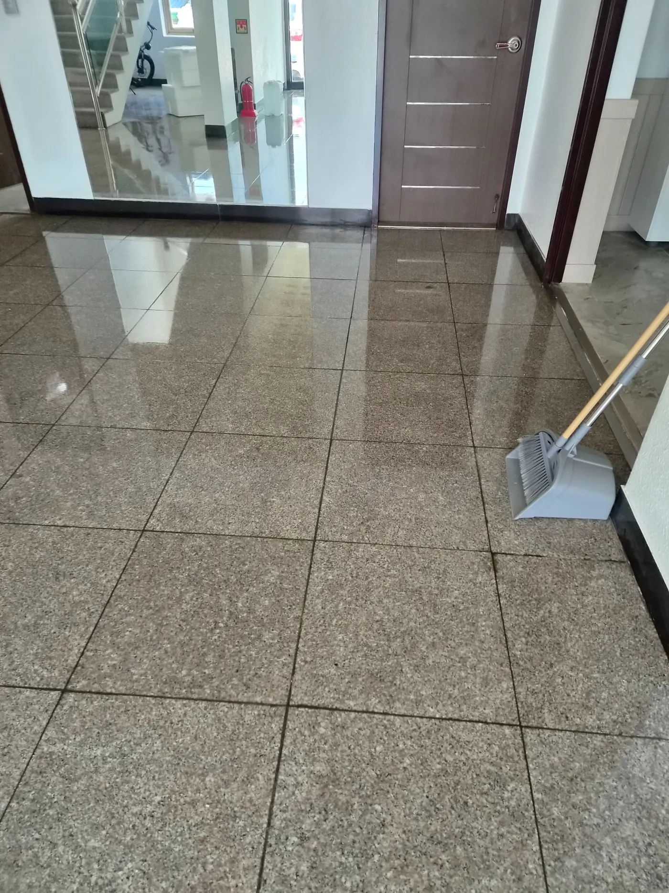
로비는 외부 오염이 처음 들어오는 구간이라 다른 공간보다 오염 속도가 빠릅니다. 표면 먼지를 먼저 제거하고 얼룩이 집중된 부분을 정리해 바닥이 고르게 보이도록 관리합니다. 정기청소에서는 출입량과 날씨에 따라 현관 쪽 관리 비중을 높일 수 있습니다.
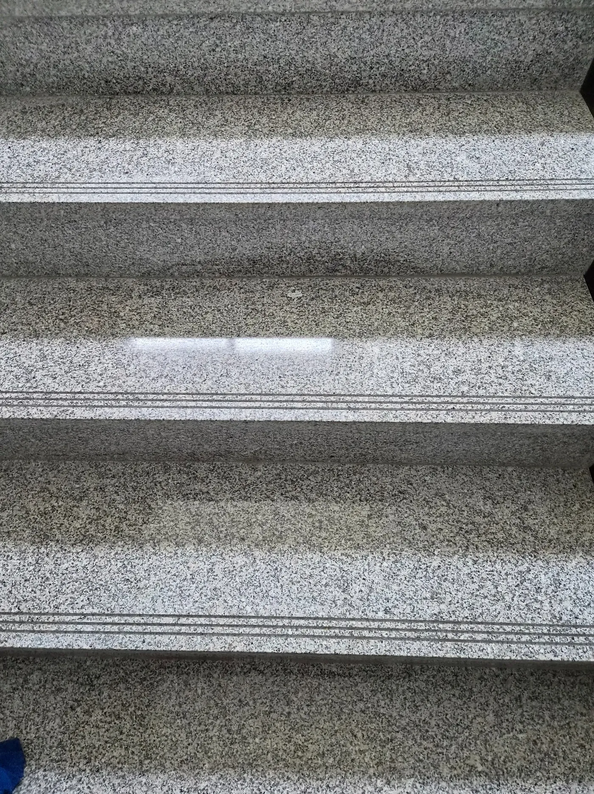
계단은 평면 바닥보다 먼지가 계단 끝과 모서리에 모이기 쉽습니다. 보행이 반복되는 계단 앞쪽은 신발 자국도 잘 남기 때문에 단마다 상태를 확인하면서 관리합니다. 특히 난간 주변과 계단참까지 연결해서 청소해야 공용부 전체가 깔끔하게 이어집니다.
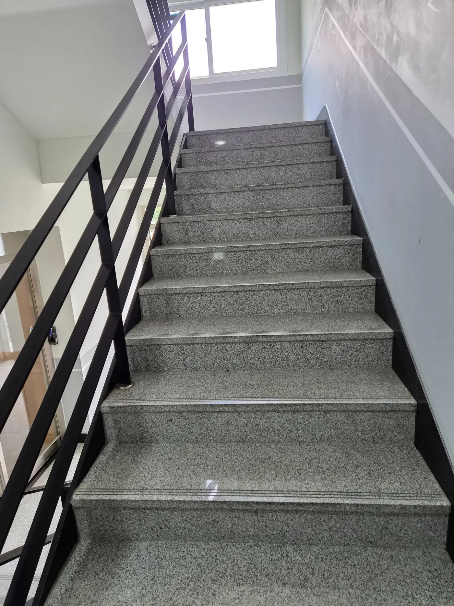
계단참은 방향을 바꾸는 구간이라 발걸음이 집중되고 먼지가 모서리에 남기 쉽습니다. 창가에서 들어오는 빛 때문에 바닥 얼룩이 더 선명하게 보일 수 있어 표면 상태를 세심하게 확인합니다. 계단과 계단참을 함께 관리하면 건물 내부 이동공간의 인상이 훨씬 정돈됩니다.
기업체 화장실은 도기와 바닥을 함께 관리합니다
사업장 화장실은 이용 빈도가 높아 정기관리 효과가 가장 빠르게 나타나는 공간입니다. 소변기와 양변기, 세면대처럼 눈에 잘 보이는 도기뿐 아니라 바닥 배수구 주변과 벽면 하단, 휴지통 주변까지 함께 확인합니다.
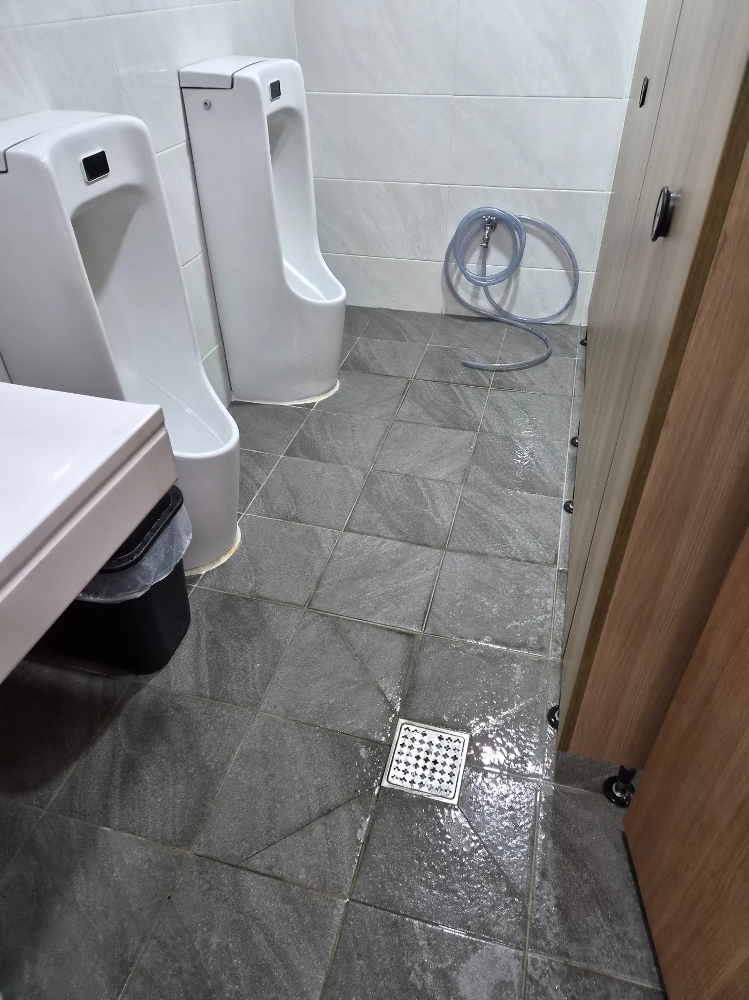
소변기 하단은 물기와 사용 흔적이 반복적으로 남아 냄새 원인이 되기 쉬운 구간입니다. 도기 표면만 닦는 것이 아니라 하단 바닥과 벽면 인접부까지 함께 확인해야 관리 효과가 오래갑니다. 정기청소에서는 사용량에 맞춰 오염이 다시 쌓이는 속도를 보면서 관리 주기를 맞춥니다.
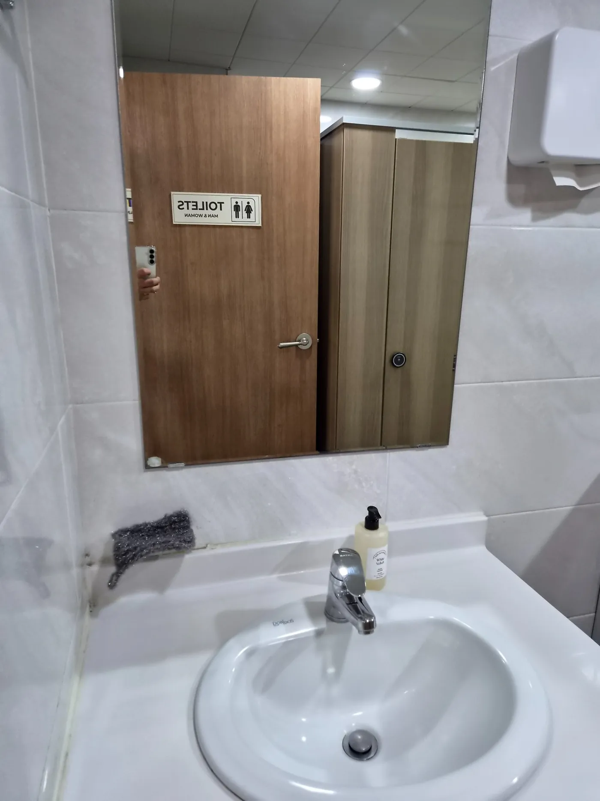
세면대는 물때와 비누 잔여물이 쉽게 남고, 거울에는 물방울과 손자국이 반복됩니다. 수전 주변과 세면볼 가장자리까지 닦은 뒤 거울 상태를 확인하면 화장실 전체가 훨씬 깨끗해 보입니다. 비누통과 주변 벽면도 함께 정돈해 사용자가 바로 체감할 수 있는 상태로 마무리합니다.
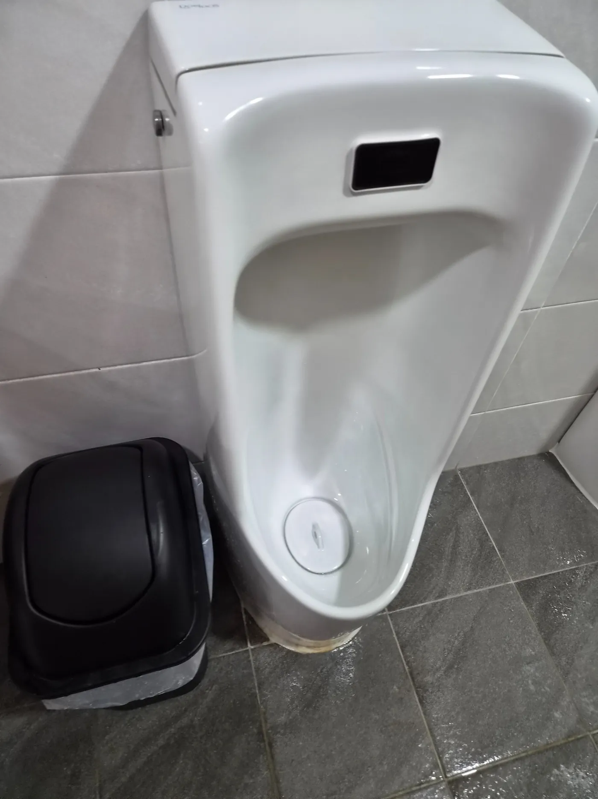
소변기는 내부 표면뿐 아니라 바닥과 맞닿는 하단부에 오염이 누적되기 쉽습니다. 육안으로 깨끗해 보여도 하단 테두리와 벽면 접점은 별도로 확인해야 합니다. 작업 후에는 잔여 세제가 남지 않도록 마무리하고 바닥 물기도 함께 정리합니다.
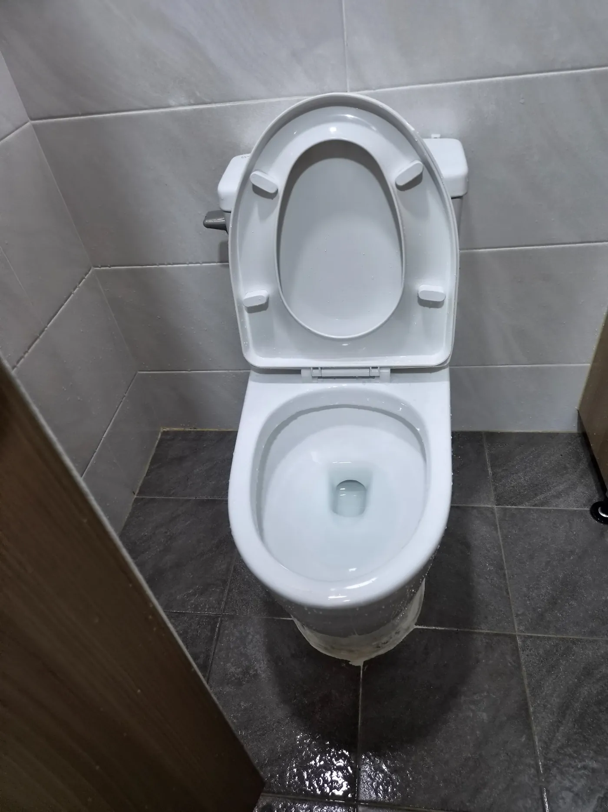
변기 안쪽은 물론 시트 주변과 도기 외부, 바닥과 맞닿는 부분까지 확인합니다. 좁은 칸 안에서는 벽면과 휴지통 주변에 먼지와 물기가 함께 쌓일 수 있어 공간 전체를 한 번에 정리합니다. 반복 관리 시에는 오염이 심해지기 전에 제거할 수 있어 청결 유지가 수월합니다.
정기청소는 현장 이용량에 맞춰 범위를 정합니다
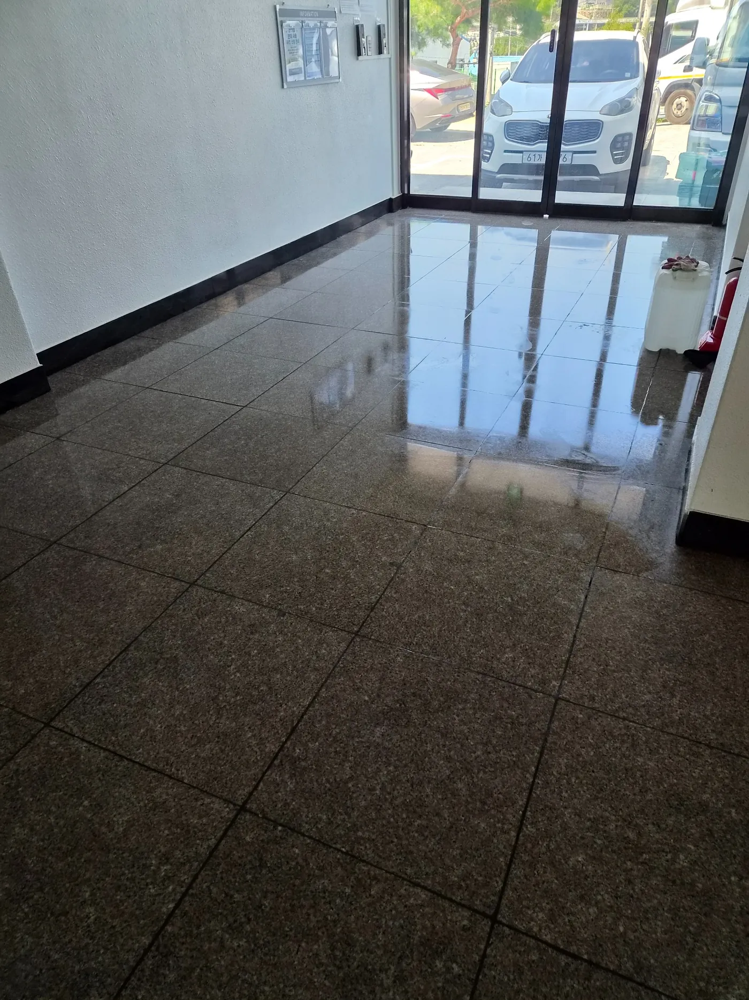
사무실 안쪽을 깨끗하게 관리해도 출입구 바닥에 먼지와 얼룩이 남으면 전체 인상이 떨어질 수 있습니다. 현장 마무리 단계에서는 출입 동선과 공용부를 다시 확인해 빠진 구역이 없는지 점검합니다. 사무공간, 휴게실, 화장실, 계단을 하나의 동선으로 관리하면 사업장 전체 청결도를 일정하게 유지하는 데 도움이 됩니다.
퍼펙트케어 정기청소는 현장 규모, 직원 수, 방문객 수, 이용량, 운영시간, 바닥 오염 정도와 관리 범위를 확인한 뒤 주 1회부터 주 6회까지 상담합니다. 같은 면적이라도 사용하는 인원과 업종에 따라 필요한 관리 횟수와 작업 범위가 달라지기 때문에 먼저 현장을 확인하는 방식이 정확합니다.
김해 사업장 정기청소 무료 방문견적
사무실, 공장, 화장실, 휴게실, 계단과 공용공간까지 현장을 직접 확인한 뒤 필요한 범위와 관리주기를 안내합니다. 김해 안동공단 사무실 정기청소 상담도 현장 확인을 기준으로 진행합니다.